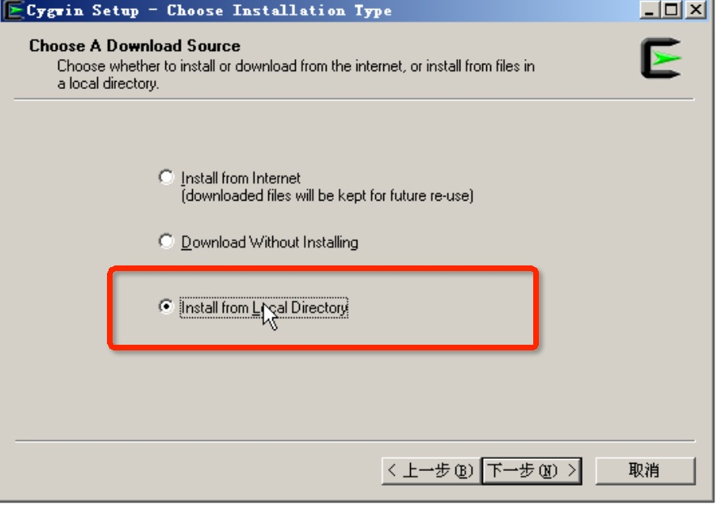
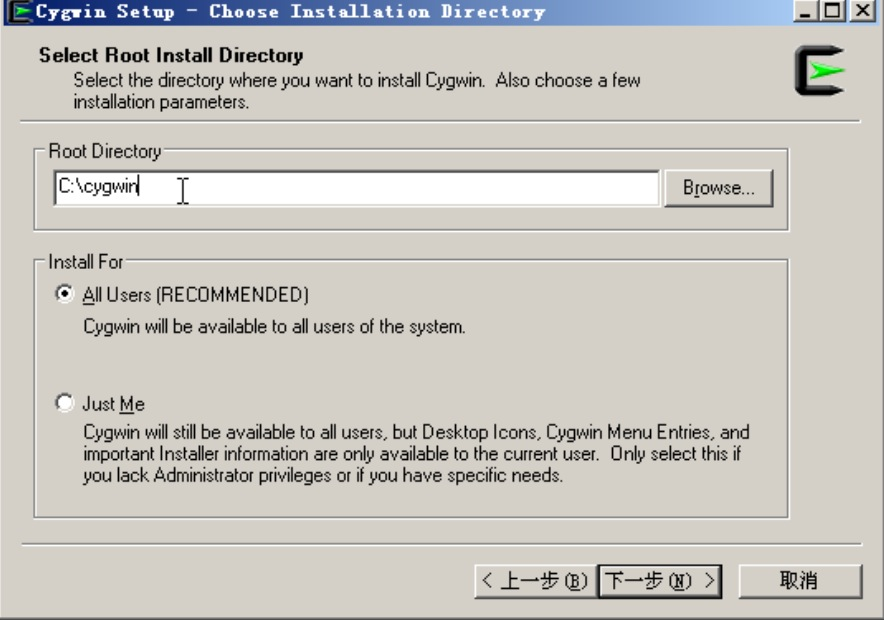
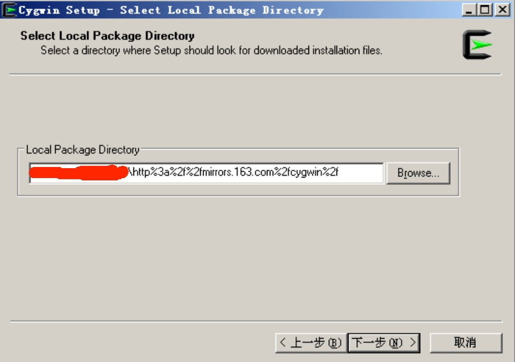
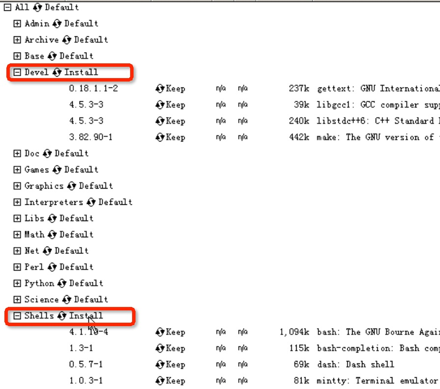
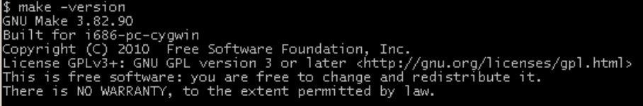
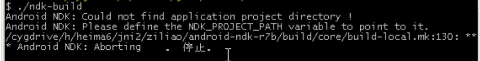
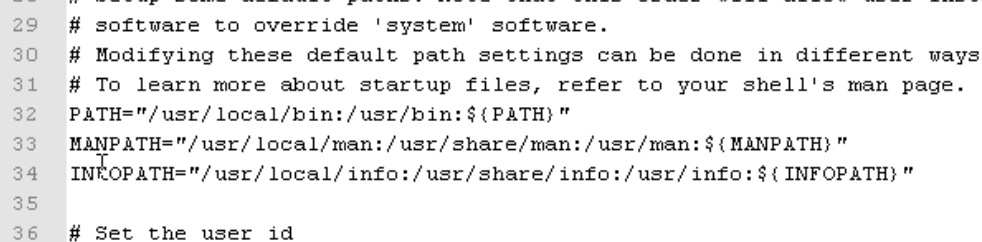

如果你工作在Windows环境而又不想使用linux环境，可以安装cygwin，为了使用gcc注意cygwin的必选安装包在devel目录下：binutils，gcc，make。 Cygwin的更多细节可以从网上获取。 总之，安装完成以后，运行cygwin的快捷方式，在控制台输入命令 gcc和make，有合理的反馈即可（不是SB的command not found），证明你就可以在伪造的linux下开始造人计划了。 我在cygwin里面加了个环境变量，你也可以考虑加一下，后面方便（写你自己的目录哦）：
ANDROID_NDK_ROOT=/cygdrive/e/software/android/android-ndk-r4
export ANDROID_NDK_ROOTxw
下面给出一些安装的截图， cygwin 的安装包 http://pan.baidu.com/s/1bnitNnp 安装资源有几种方式，由于在线安装需要较长的时间，本人已将本地安装的文件夹下载完成，可从本地直接安装 该文件夹放在了百度云盘上，链接http://pan.baidu.com/s/1mg0suI8，解压后里面的文件夹就是要选择的文件夹。（后面会用到） 
接下来是安装cgwin的目录，记住安装目录下不要有中文和空格 
接下来是选择安装插件包了，下面这个奇怪的长串就是我们云盘里面解压出来的根目录 
由于我们要进行编译，下面的两项需要变为Install(点击右边的Default即可) 
点击下一步，cygwin就可以安装完成了。
测试一下cygwin的是否安装好了
打开cygwin
敲入make -version

出现上面的信息就表示linux的模拟环境就创建好了。
在Cygwin 进入根目录敲入ls -l会有一个cygdrive目录进入后就是电脑上的c，d……盘等信息，
下载Android 的ndk工具进入其目录下找到会看见一个ndk-build的脚本，这个脚本就是linux下的一个脚本，接下来我们可以利用cygwin切换到window盘符下的ndk目录下
不要直接敲 ndk-build,会出现command not found的，需要加上 ./ndk-build (.代表当前目录 ,/代表上级目录，linux执行一个命令需要在其上级目录)

上面的输出就表明ndk的环境是没有问题的了。
为了在其他目录下都能使用ndk-nuild 命令，我们得加入环境变量。
我们打开c:\cygwin\etc\profile文件

在上面的PATH环境变量中加入NDK的目录，linux下环境变量的分割是用得冒号。
PATH ="/usr/local/bin:/cygdrive/d/jni/android-ndk-r7d:/usr/bin:${PATH}"
保存退出，退出cygwin再次打开，在任意目录下输入ndk-build试一试。应该都可以找到这个脚本了。 其实在ndk目录下有一个ndk-build.cmd的windows下得脚本文件，但是还不完善，不建议使用。